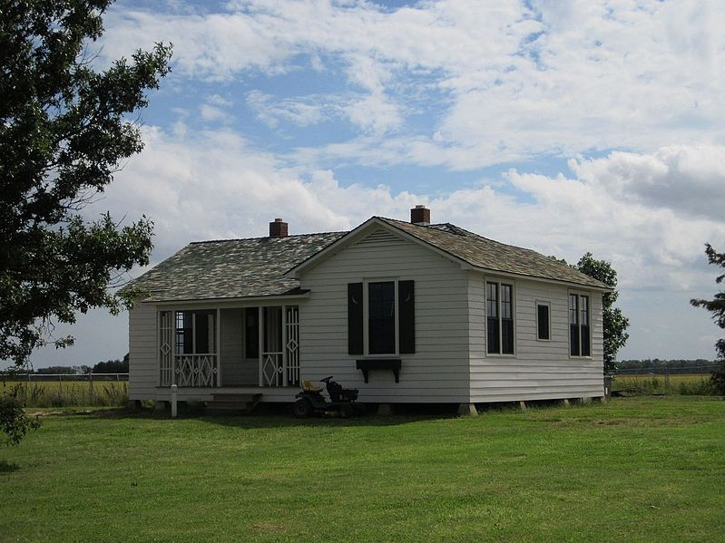
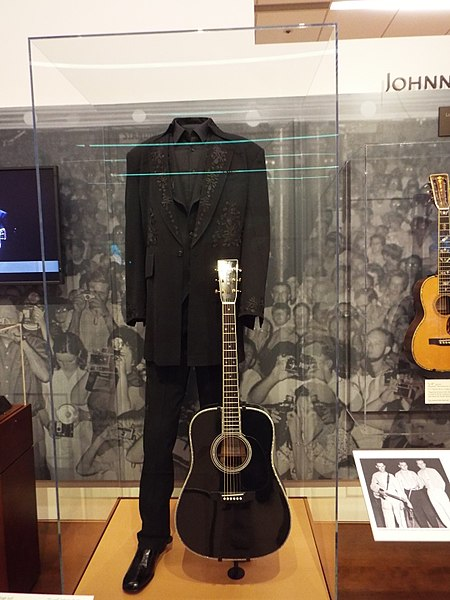
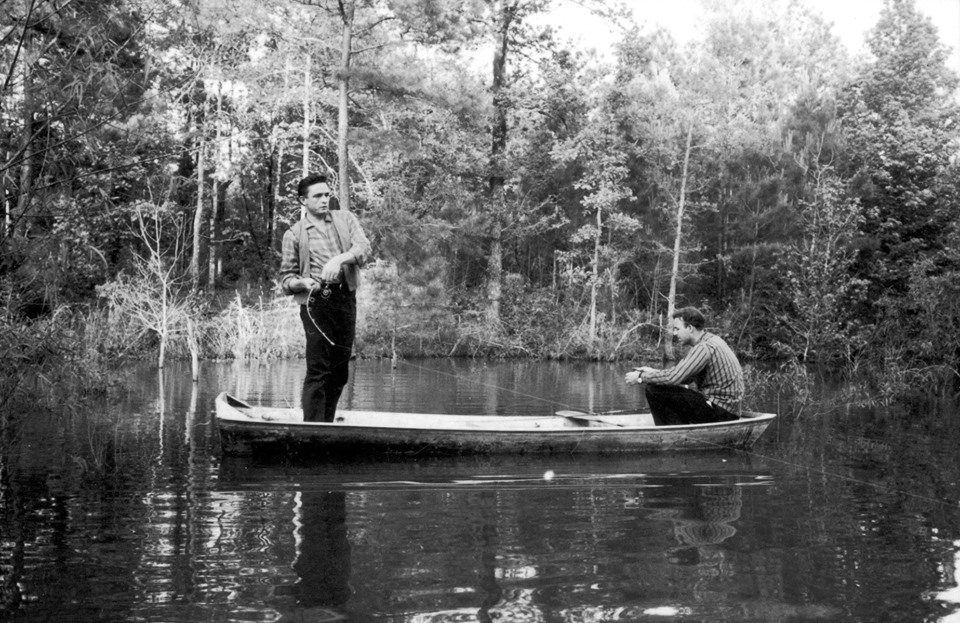
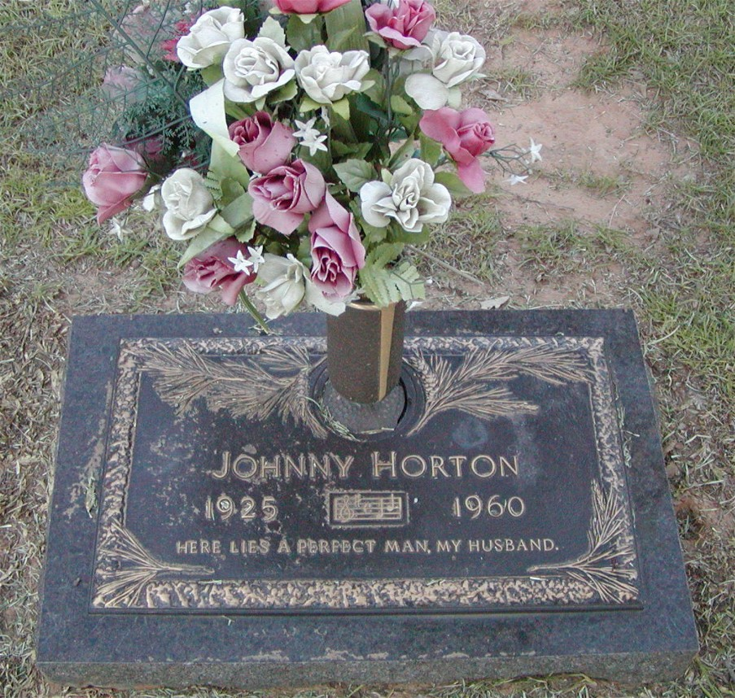

Photo of Mr. Cash's Childhood home, all credit to Thomas R. Machnitzk

A picture taken of Johnny Cash's signature 'Man in Black' suit staged in the Phoenix Musical Museum. Photo taken by
Tony Santiago, A.K.A. Marine69-71 on Wikipedia
Johnny Horton

Here is a picture provided by Legacy media a sony company of Mr. Cash and Mr. Horton Fishing.

Picture taken by Michelle Woodham and found on findagrave.com, gravestone is in Shreveport, Louisiana.